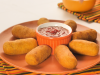

Enroladinho

Ingredientes massa:
- 3 xicaras de agua
2 colheres de oleo
sal a gosto
2 xicaras e 1/2 de trigo
1 sache de tempero pronto
Ingredientes recheio
farinha de rosca pra empanar
Modo de Preparo:
- Misture tudo da massa e leve ao fogo
mexa bastante(o ponto é a massa desgrudar da panela),quando der o ponto retire de fogo e reserve
corte todas as salsichas ao meio
unte as mãos com óleo e enrole as salsichas na massa
passe na farinha de rosca e frite